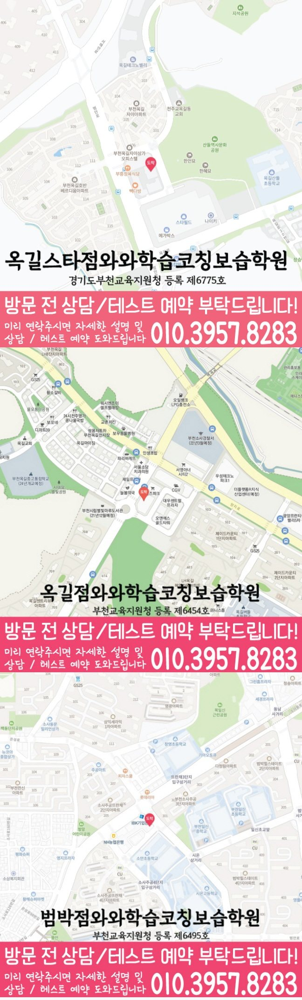

30초 핵심 안내
옥길동 고등 영수학원 선택 전 확인할 기준
옥길동 고등 영수학원은 옥길동에서 고등 영어와 수학 학원을 찾는 가정을 위한 지역 정보 콘텐츠입니다. 제공 주소는 경기 부천시 소사구 옥길로 116 퀸즈파크 A동 7층 718호~719이고, 학원운영자, 학생 유형별 우선순위, 시험 대비와 오답 피드백을 정리합니다. 수업 가능 여부와 비용·시간표 등 운영 정보는 옥길동 상담 시 확인해야 합니다.
High School English & Math
옥길동 고등 영수학원 선택 전 무엇을 물어봐야 할까요? 경기 부천시 옥길동 고등학생의 과목별 진단, 주간 복습, 내신·오답 관리와 학원운영자 확인법을 주소 경기 부천시 소사구 옥길로 116 퀸즈파크 A동 7층 718호~719 정보와 함께 구체적으로 설명합니다.
30초 핵심 안내
옥길동 고등 영수학원은 옥길동에서 고등 영어와 수학 학원을 찾는 가정을 위한 지역 정보 콘텐츠입니다. 제공 주소는 경기 부천시 소사구 옥길로 116 퀸즈파크 A동 7층 718호~719이고, 학원운영자, 학생 유형별 우선순위, 시험 대비와 오답 피드백을 정리합니다. 수업 가능 여부와 비용·시간표 등 운영 정보는 옥길동 상담 시 확인해야 합니다.
수업 안내 이미지

센터 위치 안내

옥길동 고등 영수학원을 알아보는 경기 부천시 옥길동 가정이라면 결론은 분명합니다. 고3 학생에게 필요한 것은 영어의 어휘·구문·독해 문제와 수학의 개념·유형·오답 문제를 구분해 진단하고, 학교 일정에 맞춰 복습 주기를 만드는 옥길동 학생에게 필요한 수업입니다. 이 글은 영어 듣기 점수는 안정적이지만 독해 정확도가 들쭉날쭉한 상황, 수학 선행 진도는 빠르지만 이전 단원의 연결이 약한 상황, 그리고 오답 복습일을 따로 잡지 않아 새 문제만 계속 푸는 생활 패턴을 가진 학생을 기준으로 학원운영자 확인법까지 바로 답합니다.
경기 부천시 옥길동 학생의 영어와 수학을 함께 관리하려면 학교 일정, 통원 시간, 복습 가능 시간을 한 흐름으로 봐야 합니다. 센터 위치 경기 부천시 소사구 옥길로 116 퀸즈파크 A동 7층 718호~719와 제공 학년 고1·고2을 확인한 뒤 최근 학습 기록을 준비해 상담하는 방식이 적절합니다.
옥길동 학교 학습과의 연결은 제공 목록인 범박고을 참고하되, 실제 수업 판단은 최근 시험 범위와 오답 유형을 중심으로 진행합니다. 제공되지 않은 학교나 생활권 정보는 임의로 추가하지 않았습니다.
페이지의 센터 기준은 와와학습코칭센터 옥길점이며 제공 등록 정보는 부천교육지원청 등록 제6454호입니다. 옥길동 상담에서는 등록 정보와 교습비 링크가 실제 수업 횟수·교재·보강 조건과 어떻게 연결되는지도 함께 확인합니다.
학원운영자를 검색할 때 옥길동 학부모가 가장 먼저 볼 기준은 관리 프로그램의 기능보다 교사가 그 기록을 실제 수업 조정에 쓰는지 묻는 것입니다. 옥길동 고등 영수학원 상담에서는 “결석·과제 미완료·성취 저하가 생겼을 때 연락 기준이 있는지”, “강사 변경이나 운영 일정 변경이 어떻게 안내되는지”를 질문으로 적어 두면 설명을 비교하기 쉬워집니다. 학원운영자라는 표현 자체보다 실제 운영 근거를 확인해야 하며, 앱이나 시스템이 있다는 사실보다 기록이 학생의 다음 과제와 수업 난도에 반영되는지를 확인해야 합니다.
옥길동 고등 영수학원의 관리가 실제 습관으로 이어지려면 옥길동 학생이 매일 무엇을 시작할지 스스로 알 수 있어야 합니다. 교재를 바꾸기 전 현재 자료를 점검하는 시기에는 영어 단어·구문, 수학 개념·오답을 최소 단위로 정하고, 여유가 있는 날만 추가 문제를 배치하는 방식이 현실적입니다. 경기 부천시 옥길동 학부모는 공부 시간 총합보다 시작 지연, 완료율, 재풀이 날짜를 확인하고, “학교 수업 진도와 학원 과제를 한 주 단위로 맞추기”를 학생과 함께 짧게 점검하는 편이 좋습니다.
옥길동 고등 영수학원에서 고등 영어를 배우려는 고3 학생이 영어 듣기 점수는 안정적이지만 독해 정확도가 들쭉날쭉한 편이라면 새로운 교재를 늘리기 전에 최근 오답을 네 가지로 분류해야 합니다. 옥길동 기준으로는 단어를 몰랐는지, 문장 관계를 잘못 읽었는지, 글의 핵심을 놓쳤는지, 시간 때문에 추측했는지를 나누는 방식이 실용적입니다. 이후 같은 원인의 문항을 짧게 다시 풀고 학생이 근거를 말하게 해야 하며, 옥길동 학생의 학교 시험 계획에는 교과 자료를 회상하는 연습까지 추가해야 합니다.
옥길동 고등 영수학원의 고등 수학 관리가 이번 고3 학생에게 맞으려면 풀이 과정이 기록으로 남아야 합니다. 수학 선행 진도는 빠르지만 이전 단원의 연결이 약한 모습은 답만 채점해서는 원인이 보이지 않으므로, 옥길동 수업에서는 문제를 읽고 무엇을 구하는지 말하기, 사용할 개념을 고르기, 식을 세우기, 검산하기를 차례로 확인하는 편이 좋습니다. 매주 새 진도와 누적 복습의 비율을 정하고, 옥길동 학생은 시험 전에 섞인 문항을 제한 시간 안에 풀어 전환 기준까지 연습해야 합니다.
제공 자료에는 “범박고”, “옥길중”이 기재되어 있습니다. 옥길동 고등 영수학원 상담에서 이 정보를 자연스럽게 쓰려면 옥길동 학생이 현재 어느 자료로 배우고 있고 최근 시험에서 어떤 문항을 놓쳤는지부터 설명해야 합니다. 영어는 본문·어휘·서술형의 회상 정도를, 수학은 단원별 개념과 풀이 재현을 나누어 확인하는 방식이 옥길동 학생에게 적합합니다. 학교별 대비는 고정된 예상 문제를 주는 방식보다 실제 범위와 학습 기록에 따라 계획을 바꾸는 옥길동 내신 관리 과정이어야 합니다.
경기 부천시 소사구 옥길로 116 퀸즈파크 A동 7층 718호~719는 옥길동 고등 영수학원의 제공 주소입니다. 옥길동에서 상담을 예약한다면 최근 성적표만 가져가기보다 틀린 시험지, 현재 교재, 과제 완료 흔적, 학교 일정표를 함께 준비해야 합니다. 경기 부천시 옥길동 학부모는 “수업을 잘한다”는 추상적 설명 대신 첫 진단 결과, 영어·수학별 주간 목표, 질문 처리, 결석 보완, 피드백 방식이 어떻게 기록되는지 확인하고, 변동 가능한 운영 정보는 방문 전 다시 문의하는 편이 안전합니다.
Information Basis
이 페이지는 제공된 센터 정보와 지역별 원고를 바탕으로 작성했으며, 제공되지 않은 학교명이나 생활권 정보는 임의로 추가하지 않았습니다.
FAQ
옥길동에서 영어 듣기 점수는 안정적이지만 독해 정확도가 들쭉날쭉한 학생과 수학 선행 진도는 빠르지만 이전 단원의 연결이 약한 학생처럼 과목별 원인이 다른 경우, 영어와 수학을 따로 진단하고 주간 계획에서 연결하는 방식이 필요합니다. 옥길동 고등 영수학원이 적합한지는 반 이름보다 진단 근거, 질문 시간, 오답 재풀이, 과제 조정 기록으로 판단하는 편이 좋습니다.
경기 부천시 옥길동 고등 영수학원 상담에서는 영어에 필요한 짧은 반복과 수학에 필요한 긴 집중 시간을 다르게 배정해야 합니다. 두 과목 모두 완료율·정확도·오답 원인·다음 점검일을 남기되, 분량까지 똑같이 맞추지 않는 것이 옥길동 학생 관리의 핵심입니다.
옥길동 학생의 최근 시험지, 현재 교과서와 부교재, 학교 프린트, 수행평가 일정, 일주일 시간표를 준비하는 것이 좋습니다. 경기 부천시 옥길동 상담에서는 영어 서술형 감점과 수학 풀이형 감점을 따로 확인하고, 시험 범위 공지 전후의 계획이 어떻게 달라지는지 물어보십시오.
학원운영자에 대해서는 학부모 문의가 수업 담당자에게 정확히 전달되는지를 먼저 묻고, 답변이 학생의 실제 수업과 기록에 어떻게 적용되는지 확인해야 합니다. 옥길동 고등 영수학원의 설명이 모호하면 적용 조건, 담당자, 점검 시점, 변경 절차를 다시 질문해 같은 기준으로 비교하는 편이 좋습니다.
제공 주소는 경기 부천시 소사구 옥길로 116 퀸즈파크 A동 7층 718호~719입니다. 옥길동에서 이동 가능한 요일과 시간을 실제 생활표에 넣어 본 뒤, 운영 시간, 수강료, 반 정원, 교재비, 결석·보강 기준처럼 변동 가능한 정보는 방문 전 별도로 확인하십시오.
Parent Perspective
※ 이 내용은 경기 부천시 옥길동의 정보성 페이지에 쓰는 가상 학부모 후기이며, 실제 이용자의 평가가 아닙니다.
아이는 영어 듣기 점수는 안정적이지만 독해 정확도가 들쭉날쭉한 편이고 수학 선행 진도는 빠르지만 이전 단원의 연결이 약한 편이라 한 가지 기준으로는 설명하기 어려웠습니다. 옥길동 고등 영수학원을 알아보며 과목별 목표를 따로 정하고, 주간 계획에서는 전체 부담을 조정하는 관점을 배웠습니다. 학원운영자도 상담 질문으로 바꾸어 보니 확인해야 할 내용이 더 분명해졌습니다.